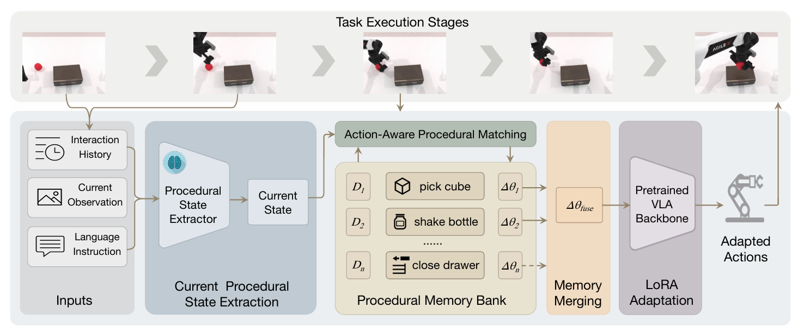
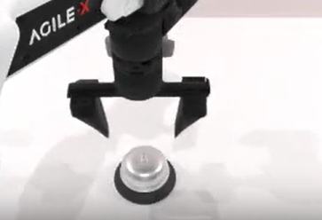
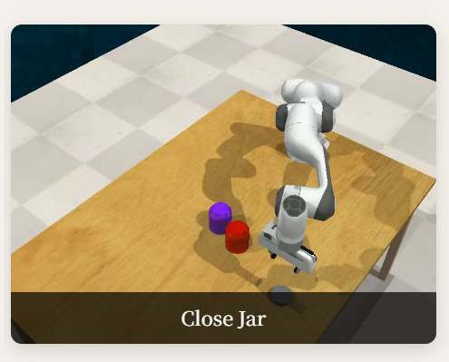
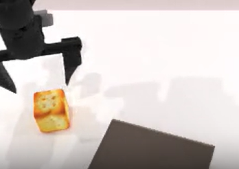
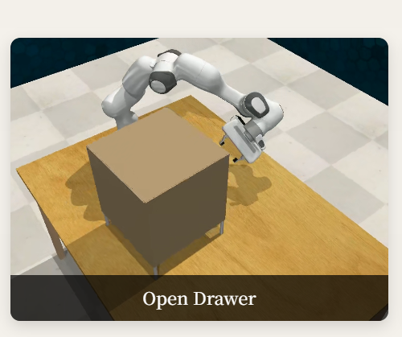
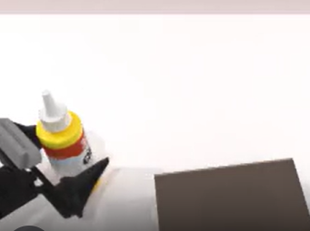
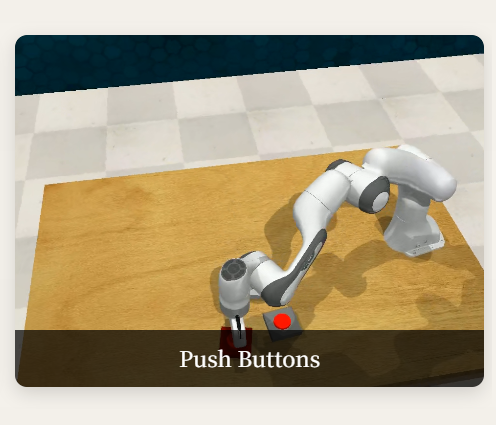

Procedural Memory
Stores seen-task procedural states and task-specific LoRA adapters as retrievable, executable memories.
Vision-Language-Action (VLA) models have shown strong potential for general-purpose robotic manipulation, yet they still struggle to generalize to unseen tasks that necessitate transferring relevant experience across objects, scenes, and action patterns. This paper proposes VLA-Pro, a plug-and-play framework designed to enhance cross-task generalization by storing task-relevant procedural memories at training time and transferring these memories during inference.
VLA-Pro stores task-specific LoRA adapters as parameterized procedural memories during training. At inference time, it retrieves relevant procedural memories based on the current multi-modal context and dynamically fuses these memories for generating the current action chunk. Experiments on RoboTwin, RLBench, and real-world manipulation tasks show that VLA-Pro consistently improves cross-task generalization across multiple backbones.
Stores seen-task procedural states and task-specific LoRA adapters as retrievable, executable memories.
Matches the current procedural state using action type, object geometry, end-effector orientation, and target interaction point.
Converts memory similarities into fusion coefficients and merges top-k task adapters for the current execution stage.
Improves unseen-task execution on RoboTwin, RLBench, and real-world robotic manipulation scenarios.
VLA-Pro abstracts the current execution stage into a structured procedural state, retrieves relevant source memories, and temporarily injects a fused adapter into the VLA backbone.

Train a shared base LoRA on seen tasks to capture general manipulation knowledge.
Extract procedural state sequences and fine-tune task-specific LoRA adapters for source tasks.
Before each action chunk, query the memory bank with the current procedural state.
Softmax-normalize top-k similarities and merge retrieved LoRA adapters by weighted summation.
Load the fused adapter, execute the current chunk, unload it, and repeat for the next stage.
Representative source memories and transfer targets from RoboTwin and RLBench.

RoboTwin
Transfers precise target-contact behavior in held-out simulation tasks.

RLBench
Object-level source memory for jar lid interaction and retrieval.

RoboTwin
Stores spatial-relation placement patterns for unseen object layouts.

RLBench
Pulling and spatial-interaction memory for drawer-like objects.

RoboTwin
Provides grasp-and-place experience for upright placement targets.

RLBench
Target-point memory for pressing small articulated objects.
VLA-Pro is evaluated in three complementary settings: RoboTwin simulation, RLBench zero-shot transfer, and real-world robot manipulation.
| Backbone | Base | VLA-Pro | Gain |
|---|---|---|---|
| X-VLA | 17.0 | 30.0 | +76% |
| RDT | 11.1 | 34.1 | +207% |
| pi0.5 | 40.4 | 59.3 | +47% |
| Best gain | RDT backbone | +207% | |
| Method | Avg. | Comparison |
|---|---|---|
| RDT | 10.2 | general baseline |
| pi0.5 | 13.8 | backbone baseline |
| AtomicVLA | 14.7 | skill-expert baseline |
| VLA-Pro | 20.9 | +51% vs pi0.5 |
| Metric | Base | VLA-Pro |
|---|---|---|
| Average | 5.8 | 65.0 |
| Best task | 15.0 | 95.0 |
| Improvement | +59.2 percentage points | |
| Held-out tasks | 6 real-world tasks | |
VLA-Pro improves all three backbones on held-out simulation tasks, with the largest relative gain on RDT.
On RLBench, k=2 achieves the best average success rate, indicating that a proper number of related memories improves transfer.
Using pi0.5 as the backbone, VLA-Pro increases real-world average success from 5.8% to 65.0% over six held-out tasks.
RoboTwin simulation clips and real-world experiment clips from the project assets.
@misc{vlapro2026,
title = {VLA-Pro: Cross-Task Procedural Memory Transfer for Vision-Language-Action Models},
author = {Anonymous Author(s)},
year = {2026},
note = {Submitted to NeurIPS 2026}
}